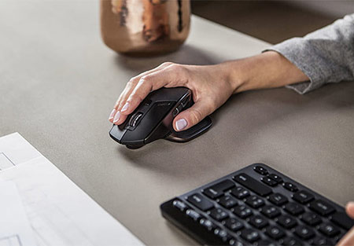

10 เมาส์เกมมิ่ง ยี่ห้อไหนดี ในปี 2022

ถ้าทุกคนคิดถึงอุปกรณ์ที่สำคัญมากๆในการทำงานหรือเล่นเกมโดยใช้คอมตั้งโต๊ะ PC หรือ แล็ปท็อป
อย่าแรกที่ใครหลายๆคนคิดอาจจะเป็นเมาส์ และ คีย์บอร์ด ถ้าพูดถึงอุปกรณ์เหล่านี้มีให้เราเลือกซื้อกันมากมาย มีความหลากหลายมาก ในปัจจุบัน
ที่บางครั้งเวลาจะซื้อมักจะมีปัญหาในการเลือกว่ารุ่นนี้เหมาะกับการใช้งานของเรามั้ย เพราะในด้านการออกแบบของเมาส์แต่ละรุ่นมีการออกแบบให้เหมาะกับการใช้งานที่แตกต่างกัน
เรื่องการออกแบบก็สำคัญ และจะมีเรื่องราคา ฟังก์ชั่นในการใช้งาน ก็อาจจะทำให้ใครหลายๆคนเกิดความลังเลเลือกยาก
เพื่อรองรับการใช้งานที่มีความเฉพาะทางของผู้ใช้งานสาย เกมมิ่ง ส่งผลให้ในช่วงเวลานี้มีเมาส์เกมมิ่งมากมาย ที่เกิดขึ้นมาให้เหล่าเกมเมอร์สามารถเลือกซื้อกันได้อย่างหลากหลายตามความชื่นชอบ และรูปแบบการเล่นเกมในแต่ละแนวที่แตกต่างกัน ดังนั้น หากคุณก็เป็นหนึ่งใน เกมเมอร์ ที่กำลังมองหา
เมาส์อันใหม่ไว้ สำหรับการเล่นเกม หรือ การใช้งานเรื่องต่าง ๆ ในด้านนี้โดยเฉพาะ และยังคงตัดสินใจไม่ได้ว่าจะ ซื้อ เมาส์เกมมิ่ง ยี่ห้อไหนดี ในปี 2022 นี้ ที่ตอบโจทย์การใช้งานได้อย่างลงตัวและมีความคุ้มค่าจัดอยู่ในระดับสูงสุด ก็ลองเลือกดูจาก 10 อันดับสินค้าคุณภาพยอดเยี่ยม ที่เราได้คัดเลือกมาให้คุณในวันนี้ไปพร้อมกันกับรายละเอียดสินค้าแต่ละรุ่นของเราได้เลยครับ